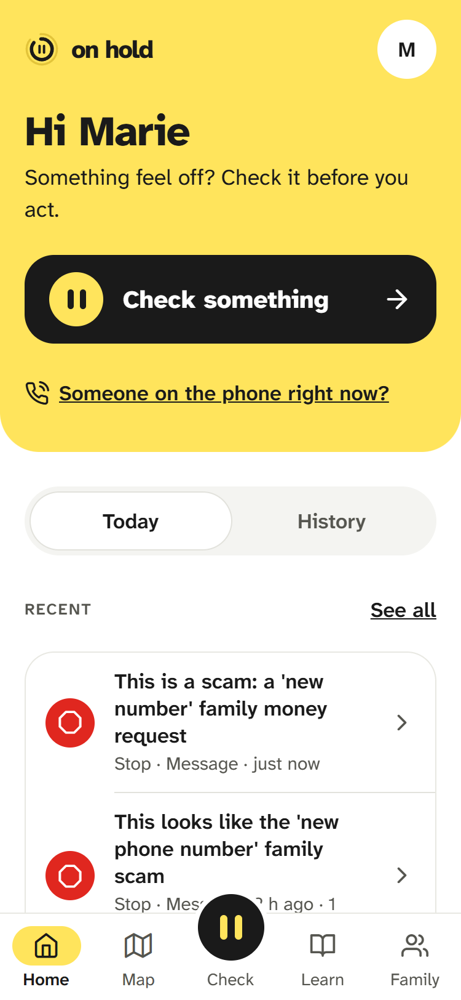
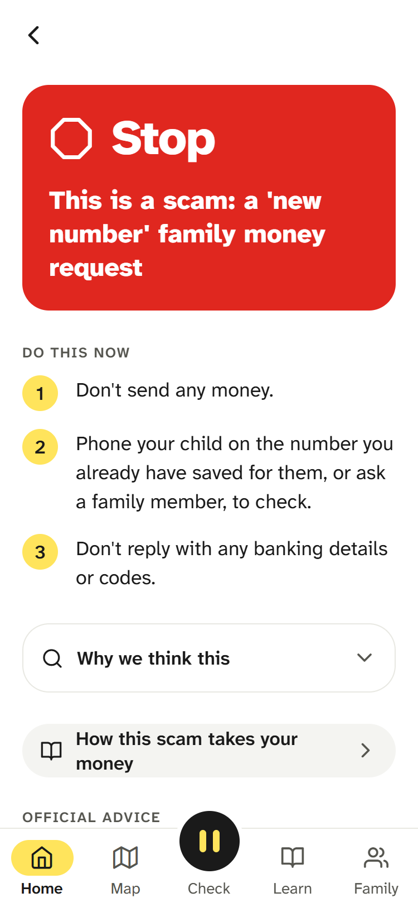
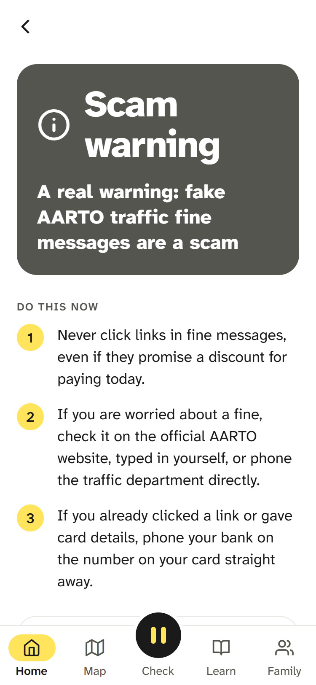
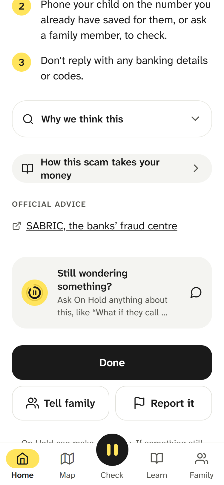

An AI scam checker for older South Africans.
Victor du Preez · 241250
DV300 Theme 4: AI-Driven Application · Social impact

The problem
lost to digital banking crime in South Africa in 2025.
of those losses came through banking apps.
“Most digital banking crime was driven by social engineering and the manipulation or compromise of customers.”
SABRIC
The weak point isn’t the app. It’s the moment someone is talked into acting.
Where scams win
“This is the fraud department. Read me the code we just sent so we can stop the payment.”
“SASSA: Your SRD R370 payment is ON HOLD. Update your details within 24hrs.”
“Hi Ma, it’s me. This is my new number. Can you send R2,500 urgently?”
“AARTO: Outstanding fine R500. Pay within 24hrs for 50% discount.”
Who it’s for
Less confident on a phone. They check a message or call before they act.
Hear about a Stop, but only what the person chose to share.
Approve community reports, and manage people, guides and areas.
The answer
Paste, screenshot or speak it. Calls too.
Breathe while it checks.
A plain verdict, and what to do now.
Family hears about a Stop, if you said so.


Live demo · onhold.pages.dev
The website, and the real app in the phone
A warning poster gets a grey Scam warning
Marie checks a “Hi Ma” WhatsApp: Stop
Report it, then the map and Learn
A screenshot of a fake SASSA SMS
Pieter sees Marie’s alert
A call in progress: “Say this, then hang up”
Admin: activity, moderation, people
Backup if the network fails: the recorded demo video.
How it’s built
iOS, Android and web from one codebase.
48 routes, on Vercel in Frankfurt, next to the database.
Postgres and sign-in. Row-level security on.
Checks and follow-up chat.
On Cloudflare Workers AI.
The website and the web app.
The AI is the core feature
Text, a screenshot, or speechWhisper turns speech into words you can fix
Claude reads it as untrusted dataSA scam patterns, and a prompt-injection guard
Structured outputthe reply always fits the schema on the right
The server checks itlengths, call scripts only for calls, source links
Saved; family alerted on a Stoponly where sharing is switched on
SourceId is a fixed list of 8 official sites, so the AI can’t invent a link.
Tested, not trusted
| Model | Right | Dangerous misses | False alarms | Speed | Per check |
|---|---|---|---|---|---|
| Claude Sonnet 5 (before) | 29 / 29 | 0 | 0 | 3.5 s | about R0.07 |
| Claude Haiku 5.5 (now) | 29 / 29 | 0 | 0 | 3.0 s | about R0.005 |
scams, including fake “official warnings” that push a link
genuine messages and real warnings that must not raise an alarm
cheaper after switching to Haiku, with nothing lost
Trust and security by design
Links come only from SABRIC, SASSA, SARS, AARTO, FSCA, PASA, SAPS.
A real warning poster is grey. A fake “warning” is a Stop.
“On Hold can make mistakes. If something feels wrong, trust that.”
Per person, separate switches for verdicts and calls.
Supabase sign-in tokens, row-level security, every query scoped to the person.
30 AI requests an hour per person; the last admin can’t be removed.

Full CRUD, by role
| What | Create · Read · Update · Delete | Who |
|---|---|---|
| Checks and follow-up chats | Create, read, delete | The person, own only |
| Scam reports | Create, read, edit, delete; approve or reject | Reporter, and admins |
| Family links | Invite, accept, change sharing, remove | Protected and guardian |
| People | Add, view history, edit name, area and role, delete | Admins |
| Learn guides | Create, read, edit, delete | Admins (everyone reads) |
| Map areas | Create, read, edit, delete | Admins |
How it was managed
commits on main
short-lived feature, fix and docs branches
merges, each kept visible in the history
automated tests: 56 API, 16 app
bugs logged, each with its fixing commit
GitHub Actions on every push: pytest, TypeScript, lint and jest.
Feedback, and what changed
[What testers said, 1]
→[What I changed]
[What testers said, 2]
→[What I changed]
[What testers said, 3]
→[What I changed]
A real warning poster got a green “Looks okay”
→Grey Scam warning; fake warnings are Stop
Speak returned the same canned words
→Real speech-to-text with Whisper
Silence came back as the word “You”
→Voice detection: “We didn’t catch any words”
The live app hung on database requests
→Transaction pooler; API moved next to the data
What’s next
A daily AI job reads official alerts and drafts warnings with the source attached. An admin approves them first. In-app reports stay as the local, near-you layer.
Build profiles are ready (Expo EAS).
Alerts are in-app today; push and SMS next.
Spotting a live scam call, Android first.
Built from real checks, with consent.
onhold.pages.dev
github.com/victordupreez0/On-Hold
marie@onhold.test · onhold-demo
← → to move · F for full screen